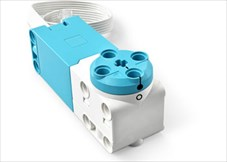

Setup#

In this course you will be using three integrated technologies.
LEGO Spike Prime: the hardware ie. the robot components.
Pybricks: the software, both the software running on the robot, and the IDE
Python: the language you will be programming in.
These all work together seamlessly, so you will barely recognise that you are using different technologies.
Pybricks
Pybricks is in OpenSource Python platform for smart LEGO hubs.
We have replaced the standard LEGO Spike firmware (the code that runs the robot) with Pybricks’ firmware. The advantage is that Pybricks is better at running Python. The disadvantage is that you can no longer use the LEGO Spike App to program the robot.
Firmware
Firmware is like a robot’s brain – it’s the special software that’s permanently inside a device, making sure it works the right way every time you use it.
Pybricks IDE#
You will be using the Pybricks IDE to program the robot. You can use the IDE in the browser or you can install it as an app on your computer. either will work fine.
To access the Pybricks IDE go to:
If this is the first time you have visited code.pybricks.com you should be offered to take a Welcome Tour, go ahead an take it (if this option didn’t show up, just click on the link on the lefthand menu).
Since your robot already has the Pybricks Firmware installed, you can go strait to connecting to the robot.
Connect Robot#
You can connect to the robot by either using a USB cable or Bluetooth. Bluetooth is more convenient, so you will use that.
To connect using Bluetooth:
press and hold the power button on the robot (the big one)
the hub should light up nine squares and the power button should be flashing blue.
Click the Bluetooth button on the Pybricks IDE
Choose your robot name from the pop-up list (the name is on the front of your robot)
Click Pair
the hub power button should be solid blue, indicating a successful connection
Check Configuration#
Your robot has three sensors devices and two motors devices connected.
Device |
Port |
Purpose |
Image |
|---|---|---|---|
Ultrasonic Sensor |
C |
Detect the distance to object in front |
|
Force Sensor |
F |
Detect the amount of pressure applied |
|
Colour Sensor |
D |
Detect the colour of an object, or the amount of light reflected |
|
Motor |
A B |
Turns in response to commands from hub |
 |

To successfully follow these tutorials, you need to make sure that they are all connected to the correct hub ports. To do this you will run your first program.
In the Pybricks IDE Create a new file and choose the Prime Hub icon
Called the file
check_config.pyCopy and paste the code below
Run the code
1# check_config.py
2
3from pybricks.hubs import PrimeHub
4from pybricks.pupdevices import Motor, ColorSensor, UltrasonicSensor, ForceSensor
5from pybricks.parameters import Button, Color, Direction, Port, Side, Stop
6from pybricks.robotics import DriveBase
7from pybricks.tools import wait, StopWatch
8from pybricks.iodevices import PUPDevice
9
10# ---- DETECT WHAT IS CONNECTED TO EACH PORT ----
11device_names = {
12 48: "SPIKE Medium Angular Motor",
13 49: "SPIKE Large Angular Motor",
14 61: "SPIKE Color Sensor",
15 62: "SPIKE Ultrasonic Sensor",
16 63: "SPIKE Force Sensor"
17}
18
19ports = [Port.A, Port.B, Port.C, Port.D, Port.F]
20
21print("Hub configuration")
22
23for port in ports:
24 device = PUPDevice(port)
25 print(port, ": ", device_names[device.info()["id"]])
26
27# CHECK THAT LEFT AND RIGHT MOTORS ARE CONNECTED TO CORRECT PORTS
28left_motor = Motor(Port.A, Direction.COUNTERCLOCKWISE)
29right_motor = Motor(Port.B, Direction.CLOCKWISE)
30drive_base = DriveBase(left_motor, right_motor, wheel_diameter=57, axle_track=80)
31
32drive_base.turn(360)
Checking the ports devices#
Don’t worry about understanding the code, you will learn that through these tutorials.
What you need to check is the output in the terminal (the panel at the bottom of the IDE). It should be the same as below:
Hub configuration
Port.A : SPIKE Medium Angular Motor
Port.B : SPIKE Medium Angular Motor
Port.C : SPIKE Ultrasonic Sensor
Port.D : SPIKE Color Sensor
Port.F : SPIKE Force Sensor
If it is the same, this means the ports are connected to the correct devices. If not, you will need to rearrange the cables so they are plugged into the correct ports.
Checking the motors#
Since there is two motors in Port A and Port B you need check that the correct motors are in the correct ports.
left motor → Port A
right motor → Port B
If the motors are in the correct ports, the robot should turn 360° in a clockwise direction.
If the robot turned in a counter-clockwise direction, switch the cables in Port A and Port B.
Start Exploring#
Your robot and computer are now setup but before you start exploring, some points about using this website.
Type the code - while it is easy to just cut and paste, typing the code will help you remember and understand what it is doing.
Use PRIMM - anticipating what code will do before running it, and then playing around with the code to see what it will do are two powerful ways to improving your understanding. These tutorials encourage you to use the PRIMM model to really enhance your learning. Details of the PRIMM model are below.
Read the text - other than the code, there is a heap of useful information on this website. Check out the callout boxes (like the PRIMM one below) they normally explain coding concepts and practices. Read the investigations after the code blocks, especially if you don’t know what specific line does.
Remix and build - staying with the LEGO theme, these tutorials will provide you with heaps of little code building blocks. Play with them, mash them together to produce other things, break them into smaller parts. Use the code the same you would use LEGO.
PRIMM
Throughout this course we will use the PRIMM process to reinforce our learning. PRIMM stands for Predict, Run, Investigate, Modify, and Make. It reflects effective programming practices and encourages curiosity in programming.
Predict: Before you run the code you need to predict what you think will happen. Go ahead and have a guess at what you think will happen.
Run: Then run the program and see how accurate your prediction was. If your prediction was incorrect, how was the result different?
Investigate: Go through the code and work out what each line of code does.
Modify: Edit the code. Change it around and see that results your get
Make: Use your new understanding of the code to make a different program.